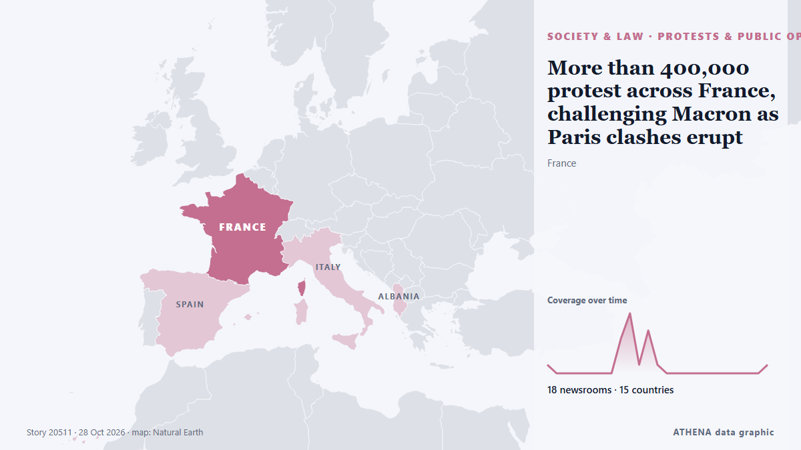

More than 400,000 protest across France, challenging Macron as Paris clashes erupt

Clashes erupted in Paris as a mass march drew to a close Saturday, with more than 400,000 people rallying across France over school funding and soaring living costs in a fresh challenge to President… de PBS NewsHour
Relayé de façon indépendante par 18 médias dans 15 pays depuis le 22 oct. ; premier à l'annoncer : The Independent ; la couverture faiblit. ATHENA juge le risque accru (5.5/10), surtout en raison de la gravité des dommages décrits et de sa portée géographique et sectorielle. La confiance est de 89 % (élevée) : 18 médias indépendants le confirment, avec une fiabilité moyenne des sources de 76 %. Qui l'a rapporté : 3 médias en États-Unis · United States, 2 médias en Royaume-Uni · United Kingdom, 1 médias en Azerbaïdjan · Azerbaijan. La couverture s'est étendue de 22 oct. à 28 oct., sur 148 heures.
Pourquoi c'est important: Les changements juridiques et politiques modifient droits, obligations et services publics pour les personnes concernées.
Ce qui a changé : 1 nouvel article dans les 24 heures jusqu'au 28 oct..
Premier titre : Clashes erupt between protesters and police in France
Les titres sont affichés en anglais, tels que publiés.
En un coup d'œil
Sélectionné, noté et rédigé par la méthodologie publiée d'ATHENA. Aucun rédacteur n'intervient sur un événement en particulier. Comment il est produit ›
| 22 Oct 10:06 UTC | 1 |
|---|---|
| 22 Oct 16:06 UTC | 0 |
| 22 Oct 22:06 UTC | 0 |
| 23 Oct 04:06 UTC | 0 |
| 23 Oct 10:06 UTC | 0 |
| 23 Oct 16:06 UTC | 0 |
| 23 Oct 22:06 UTC | 0 |
| 24 Oct 04:06 UTC | 0 |
| 24 Oct 10:06 UTC | 4 |
| 24 Oct 16:06 UTC | 7 |
| 24 Oct 22:06 UTC | 1 |
| 25 Oct 04:06 UTC | 5 |
| 25 Oct 10:06 UTC | 1 |
| 25 Oct 16:06 UTC | 0 |
| 25 Oct 22:06 UTC | 0 |
| 26 Oct 04:06 UTC | 0 |
| 26 Oct 10:06 UTC | 0 |
| 26 Oct 16:06 UTC | 0 |
| 26 Oct 22:06 UTC | 0 |
| 27 Oct 04:06 UTC | 0 |
| 27 Oct 10:06 UTC | 0 |
| 27 Oct 16:06 UTC | 0 |
| 27 Oct 22:06 UTC | 0 |
| 28 Oct 04:06 UTC | 0 |
| 28 Oct 10:06 UTC | 1 |
| 22 Oct 10:15 UTC | 3.9 |
|---|---|
| 23 Oct 16:57 UTC | 4.5 |
| 28 Oct 14:32 UTC | 5.5 |
Pourquoi ces chiffres
Importance
Risque
Confiance
La couverture : qui l'a annoncé, et quand
titre tel que publié · ouvre l'original- The Independent · Royaume-Uni · United KingdomViolent clashes erupt between Spanish police and anti-fascist protesters days after France riots
- APA (English) · Azerbaïdjan · AzerbaijanClashes erupt between protesters and police in France - UPDATED
- Fortune · États-Unis · United StatesIt’s not just France — Protesters are marching across Europe as part of the newly formed ‘Oct. 17 Movement’
- ProtoThema English ·Over 1000 arrests, hundreds injured in violent protests across France, as riots rage on in Spain and Albania
- The Independent · Royaume-Uni · United KingdomFrance protests latest: 135 arrested and tear gas fired at demonstrators as unrest erupts
- PBS NewsHour · États-Unis · United StatesMore than 400,000 protest across France, challenging Macron as Paris clashes erupt
- NDTV · Inde · IndiaOver 400,000 March Across France, Clashes Erupt In Paris
- France 24 English · FranceFrance: Clashes erupt as protests sweep across cities
- CNA (Channel NewsAsia) · Singapour · SingaporeFresh clashes rock France as protesters march on
- SBS News · Australie · AustraliaNearly 1,000 arrested as fresh clashes erupt across France
- The New York Times (World) · États-Unis · United StatesUnrest Erupts Again in France, but This Time, With Less Property Damage
- RTÉ News · Irlande · IrelandOver 1,300 people arrested during protests in France
- The Daily Star — page reader · BangladeshFresh clashes rock France as protesters march on
- The Korea Times · Corée du Sud · South KoreaMore than 400,000 protest across France, challenging Macron as Paris clashes erupt
- Al Jazeera English · QatarPhotos: Clashes erupt in France during protests over rising living costs
- ProtoThema English ·Europe up in arms: Nearly 1,000 arrested in France, violent clashes in Albania and Spain, as protesters storm Colosseum
- Mainichi (English) · Japon · JapanMore than 400,000 protest across France, challenging Macron as Paris clashes erupt
- Kyiv Post · UkraineFresh Clashes Rock France as Protesters March On
- to vima · Grèce · GreeceClashes Erupt in Thessaloniki as Police Block Protesters